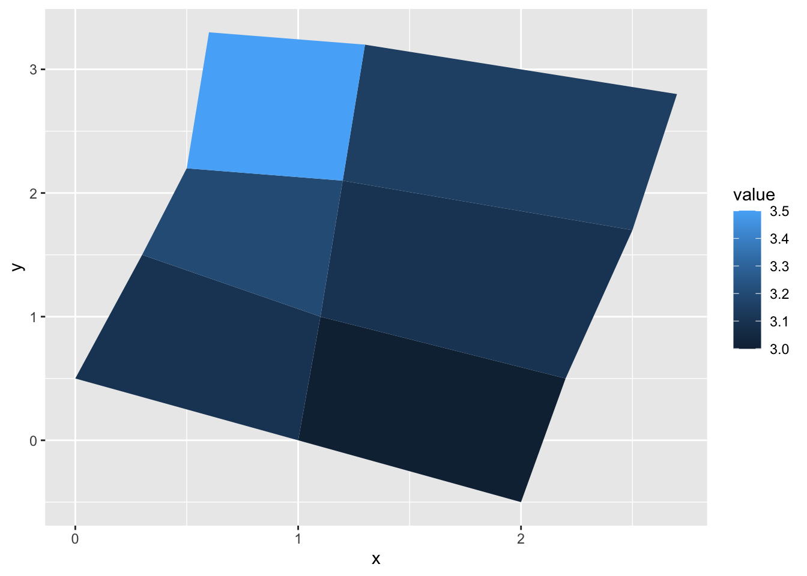

# data manipulation
library(tidyverse)
# spatial data manipulation
library(sf)1 R Fundamentals
This session will introduce the fundamental concepts, principles and tools that we will use during the course. Understanding these components provides the foundation for the rest of the course. We will introduce key concepts and functions relating to what computational notebooks are and how they work. We will also cover basic R functions and data types, including the use of factors. Additionally, we will offer a basic understanding of the manipulation non-geographic and geographic data frames using commonly used libraries the tidyverse and r-spatial ecosystems, including sf.
1.1 Learning Objectives
By the end of today’s session you should be able to:
- Be familiar with R, RStudio, Quarto and R programming.
- Handle different data types, including numeric, string and factors.
- Understand how to create and handle non-geographic and geographic data frames.
- Be familiar with common R packages, including the tidyverse and r-spatial ecosystems.
1.2 Plan for the day
| Time | Content |
|---|---|
| 10.00 - 10.15 | Introduction |
| 10.15 - 10.45 | Setting up & interacting with materials |
| 10.45 - 11.30 | R Basics |
| 11.30 - 11.50 | Break |
| 11.50 - 12.50 | Using Quarto documents & Data types |
| 12.50 - 13.30 | Lunch |
| 13.30 - 14.15 | Non-geographic data frames |
| 14.15 - 14.45 | Geographic data frames |
| 14.45 - 15.00 | Questions & closing |
1.3 Dependencies
1.4 Introducing R
R is a freely available language and environment for statistical computing and graphics which provides a wide variety of statistical and graphical techniques. It has gained widespread use in academia and industry. R offers a wider array of functionality than a traditional statistics package, is composed of core (base) functionality, and is expandable through libraries hosted on The Comprehensive R Archive Network (CRAN). CRAN is a network of ftp and web servers around the world that store identical, up-to-date, versions of code and documentation for R.
Commands are sent to R using either the terminal / command line or the R Console which is installed with R on either Windows or OS X. On Linux, there is no equivalent of the console, however, third party solutions exist. On your own machine, R can be installed from here.
Normally RStudio is used to implement R coding. RStudio is an integrated development environment (IDE) for R and provides a more user-friendly front-end to R than the front-end provided with R.
To run R or RStudio, just double click on the R or RStudio icon. Throughout this course, we will be using RStudio:

Note
If you would like to know more about the various features of RStudio, read this post.
1.5 Working directory
Before we start any analysis, ensure to set the path to the directory where we are working. We have two options to do this.
Option 1
Once you have opened R, you can use the command setwd( ) to set the working directory. For example, replace in the following line the path to the folder where you have placed this file and where the data folder lives.
setwd("")You can check your current working directory by typing:
getwd()Option 2
Before opening any files in the folder, open the file with the extension *.Rproj. This is a R project and automatically indexes all the files in the folder and subfolders so there is no need to explicitly set the working directory. You can call any files in the R project folder by replacing the working directory with “.”. For instance, let us open a dataset from our subfolder data:
read_csv("./data/census2021-ts061-lsoa.csv")1.6 R scripts
An R script is a series of commands that you can execute at one time and help you save time. R scripts are useful to ensure reproducibility; that is if you want to repeat the same series of steps with the same or different datasets. An R script is a plain text file with R commands.
Note
To get familiar with good practices in writing your code in R, we recommend the Chapter Workflow: basics and Workflow: scripts and projects from the R in Data Science book by Wickham, Çetinkaya-Rundel, and Grolemund (2023)
To create an R script in RStudio, you need to:
Open a new script file: File > New File > R Script
Write some code on your new script window by typing eg. mtcars
Run the script. Click anywhere on the line of code, then hit Ctrl + Enter (Windows) or Cmd + Enter (Mac) to run the command or select the code chunk and click run on the right-top corner of your script window. If do that, you should get:
mtcars mpg cyl disp hp drat wt qsec vs am gear carb
Mazda RX4 21.0 6 160.0 110 3.90 2.620 16.46 0 1 4 4
Mazda RX4 Wag 21.0 6 160.0 110 3.90 2.875 17.02 0 1 4 4
Datsun 710 22.8 4 108.0 93 3.85 2.320 18.61 1 1 4 1
Hornet 4 Drive 21.4 6 258.0 110 3.08 3.215 19.44 1 0 3 1
Hornet Sportabout 18.7 8 360.0 175 3.15 3.440 17.02 0 0 3 2
Valiant 18.1 6 225.0 105 2.76 3.460 20.22 1 0 3 1
Duster 360 14.3 8 360.0 245 3.21 3.570 15.84 0 0 3 4
Merc 240D 24.4 4 146.7 62 3.69 3.190 20.00 1 0 4 2
Merc 230 22.8 4 140.8 95 3.92 3.150 22.90 1 0 4 2
Merc 280 19.2 6 167.6 123 3.92 3.440 18.30 1 0 4 4
Merc 280C 17.8 6 167.6 123 3.92 3.440 18.90 1 0 4 4
Merc 450SE 16.4 8 275.8 180 3.07 4.070 17.40 0 0 3 3
Merc 450SL 17.3 8 275.8 180 3.07 3.730 17.60 0 0 3 3
Merc 450SLC 15.2 8 275.8 180 3.07 3.780 18.00 0 0 3 3
Cadillac Fleetwood 10.4 8 472.0 205 2.93 5.250 17.98 0 0 3 4
Lincoln Continental 10.4 8 460.0 215 3.00 5.424 17.82 0 0 3 4
Chrysler Imperial 14.7 8 440.0 230 3.23 5.345 17.42 0 0 3 4
Fiat 128 32.4 4 78.7 66 4.08 2.200 19.47 1 1 4 1
Honda Civic 30.4 4 75.7 52 4.93 1.615 18.52 1 1 4 2
Toyota Corolla 33.9 4 71.1 65 4.22 1.835 19.90 1 1 4 1
Toyota Corona 21.5 4 120.1 97 3.70 2.465 20.01 1 0 3 1
Dodge Challenger 15.5 8 318.0 150 2.76 3.520 16.87 0 0 3 2
AMC Javelin 15.2 8 304.0 150 3.15 3.435 17.30 0 0 3 2
Camaro Z28 13.3 8 350.0 245 3.73 3.840 15.41 0 0 3 4
Pontiac Firebird 19.2 8 400.0 175 3.08 3.845 17.05 0 0 3 2
Fiat X1-9 27.3 4 79.0 66 4.08 1.935 18.90 1 1 4 1
Porsche 914-2 26.0 4 120.3 91 4.43 2.140 16.70 0 1 5 2
Lotus Europa 30.4 4 95.1 113 3.77 1.513 16.90 1 1 5 2
Ford Pantera L 15.8 8 351.0 264 4.22 3.170 14.50 0 1 5 4
Ferrari Dino 19.7 6 145.0 175 3.62 2.770 15.50 0 1 5 6
Maserati Bora 15.0 8 301.0 335 3.54 3.570 14.60 0 1 5 8
Volvo 142E 21.4 4 121.0 109 4.11 2.780 18.60 1 1 4 2- Save the script: File > Save As, select your required destination folder, and enter any filename that you like, provided that it ends with the file extension .R
1.7 Quarto Document
A Quarto Document is based on Markdown technology. It allows to integrate descriptive text and code chunks. Code chunks can be executed independently and interactively, with output visible immediately beneath a code chunk - see Xie, Allaire, and Grolemund (2018). A Quarto Document is an improved version of the original R Notebook. Quarto Document requires a package called Quarto. Quarto does not have a dependency or requirement for R. Quarto is multilingual, beginning with R, Python, Javascript, and Julia. The concept is that Quarto will work even for languages that do not yet exist.
To create a Quarto Document, you need to:
Open a new script file: File > New File > Quarto Document.
Quarto Documents work in the same way as R Notebooks with small variations. You can find a comprehensive guide on how to use Quarto Documents on the Quarto website.
Now that you are familiar with Quarto, we will explore some basic elements:
YAML options
Code chunks
Preview
Rendering
To master Quarto, please read the Quarto Guide page.
1.7.1 Using quarto documents
Quarto documents are very flexible. They can be rendered into different formats, including pdf, html and doc files. They can be used to product reports, articles, briefs, websites, books and more. We can explore how this can be done using some of the templates we have produced and are hosted on our personal Github repository.
Let us explore the use of Quarto documents by downloading the repository above and examine the various templates available.
1.8 Help
You can use help or ? to ask for details for a specific function:
help(sqrt) #or ?sqrt
?ggplotAnd using example provides examples for said function:
example(geom_map)
gem_mp> # First, a made-up example containing a few polygons, to explain
gem_mp> # how `geom_map()` works. It requires two data frames:
gem_mp> # One contains the coordinates of each polygon (`positions`), and is
gem_mp> # provided via the `map` argument. The other contains the
gem_mp> # other the values associated with each polygon (`values`). An id
gem_mp> # variable links the two together.
gem_mp>
gem_mp> ids <- factor(c("1.1", "2.1", "1.2", "2.2", "1.3", "2.3"))
gem_mp> values <- data.frame(
gem_mp+ id = ids,
gem_mp+ value = c(3, 3.1, 3.1, 3.2, 3.15, 3.5)
gem_mp+ )
gem_mp> positions <- data.frame(
gem_mp+ id = rep(ids, each = 4),
gem_mp+ x = c(2, 1, 1.1, 2.2, 1, 0, 0.3, 1.1, 2.2, 1.1, 1.2, 2.5, 1.1, 0.3,
gem_mp+ 0.5, 1.2, 2.5, 1.2, 1.3, 2.7, 1.2, 0.5, 0.6, 1.3),
gem_mp+ y = c(-0.5, 0, 1, 0.5, 0, 0.5, 1.5, 1, 0.5, 1, 2.1, 1.7, 1, 1.5,
gem_mp+ 2.2, 2.1, 1.7, 2.1, 3.2, 2.8, 2.1, 2.2, 3.3, 3.2)
gem_mp+ )
gem_mp> ggplot(values) +
gem_mp+ geom_map(aes(map_id = id), map = positions) +
gem_mp+ expand_limits(positions)
gem_mp> ggplot(values, aes(fill = value)) +
gem_mp+ geom_map(aes(map_id = id), map = positions) +
gem_mp+ expand_limits(positions)
gem_mp> ggplot(values, aes(fill = value)) +
gem_mp+ geom_map(aes(map_id = id), map = positions) +
gem_mp+ expand_limits(positions) + ylim(0, 3)
gem_mp> # Now some examples with real maps
gem_mp> if (require(maps)) {
gem_mp+
gem_mp+ crimes <- data.frame(state = tolower(rownames(USArrests)), USArrests)
gem_mp+
gem_mp+ # Equivalent to crimes %>% tidyr::pivot_longer(Murder:Rape)
gem_mp+ vars <- lapply(names(crimes)[-1], function(j) {
gem_mp+ data.frame(state = crimes$state, variable = j, value = crimes[[j]])
gem_mp+ })
gem_mp+ crimes_long <- do.call("rbind", vars)
gem_mp+
gem_mp+ states_map <- map_data("state")
gem_mp+
gem_mp+ # without geospatial coordinate system, the resulting plot
gem_mp+ # looks weird
gem_mp+ ggplot(crimes, aes(map_id = state)) +
gem_mp+ geom_map(aes(fill = Murder), map = states_map) +
gem_mp+ expand_limits(x = states_map$long, y = states_map$lat)
gem_mp+
gem_mp+ # in combination with `coord_sf()` we get an appropriate result
gem_mp+ ggplot(crimes, aes(map_id = state)) +
gem_mp+ geom_map(aes(fill = Murder), map = states_map) +
gem_mp+ # crs = 5070 is a Conus Albers projection for North America,
gem_mp+ # see: https://epsg.io/5070
gem_mp+ # default_crs = 4326 tells coord_sf() that the input map data
gem_mp+ # are in longitude-latitude format
gem_mp+ coord_sf(
gem_mp+ crs = 5070, default_crs = 4326,
gem_mp+ xlim = c(-125, -70), ylim = c(25, 52)
gem_mp+ )
gem_mp+
gem_mp+ ggplot(crimes_long, aes(map_id = state)) +
gem_mp+ geom_map(aes(fill = value), map = states_map) +
gem_mp+ coord_sf(
gem_mp+ crs = 5070, default_crs = 4326,
gem_mp+ xlim = c(-125, -70), ylim = c(25, 52)
gem_mp+ ) +
gem_mp+ facet_wrap(~variable)
gem_mp+ }1.9 R data types
There are a number of data types. Four are the most common. In R, numeric is the default type for numbers. It stores all numbers as floating-point numbers (numbers with decimals). This is because most statistical calculations deal with numbers with up to two decimals.
Before starting with the various data types which R can handle, we should understand that any element appearing in our R environment is called a R object and they can take different shapes. It could be a single character, a vector, a matrix, a list or have a more complex structure.
Numeric
num <- 4.5 # Decimal values
class(num)[1] "numeric"Integer
int <- as.integer(4) # Natural numbers. Note integers are also numerics.
class(int)[1] "integer"Character
cha <- "are you enjoying this?" # text or string. You can also type `as.character("are you enjoying this?")`
class(cha)[1] "character"Logical
log <- 2 < 1 # assigns TRUE or FALSE. In this case, FALSE as 2 is greater than 1
log[1] FALSEclass(log)[1] "logical"You can create vectors by concatenating elements:
data_vector <- c(2, 3, 4, 5, 6)
data_vector[1] 2 3 4 5 61.9.1 Factors
A factor variable assigns a numeric code to each possible category (level) in a variable. Behind the scenes, R stores the variable using these numeric codes to save space and speed up computing. For example, compare the size of a list of 10,000 males and females to a list of 10,000 1s and 0s. At the same time R also saves the category names associated with each numeric code (level). These are used for display purposes.
For example, the variable gender, converted to a factor, would be stored as a series of 1s and 2s, where 1 = female and 2 = male; but would be displayed in all outputs using their category labels of female and male.
Defining a factor
A factor can be defined by first creating a numeric or character vector; for example:
gender <- c("female", "male", "male", "female", "female") # create a gender variable
gender <- factor(gender) # replace character vector with a factor version
gender[1] female male male female female
Levels: female maleWe can ask the class of gender:
class(gender)[1] "factor"And also its structure:
str(gender) Factor w/ 2 levels "female","male": 1 2 2 1 1gender is a factor and is stored as a series of 1s and 2s, with 1s representing females and 2s representing males. The function levels( ) lists the levels (categories) associated with a given factor variable:
levels(gender)[1] "female" "male" The categories are reported in the order that they have been numbered (starting from 1). Hence from the output we can infer that females are coded as 1, and males as 2. Factor variables are useful to encode categorical or qualitative data; that is, data on nominal or ordinal scales.
Defining an ordered factor
By default the levels of the factor (variable categories) are allocated in alphabetical order. Hence in the example above female = 1 and male = 2.
Sometimes an alternative ordering is required, for example male = 1 and female = 2.
For nominal variables, the solution is to specify the required order of the levels when calling the factor( ) function via the levels( ) sub-command:
gender2 <- factor(gender, levels= c("male", "female"))
gender2[1] female male male female female
Levels: male femaleUsing a factor to define nominal and ordinal variables
For ordinal variables, such as income (income bracket), we create an ordered factor by calling the ordered( ) rather than factor( ) function, including a call to the sub-command levels( ) which specifies the required category order:
income <- c("high", "low", "low", "middle", "high")
income <- ordered(income, levels = c("low", "middle", "high"))
income[1] high low low middle high
Levels: low < middle < highLet us explore its class, structure and levels:
class(income)[1] "ordered" "factor" str(income) Ord.factor w/ 3 levels "low"<"middle"<..: 3 1 1 2 3levels(income)[1] "low" "middle" "high" Note that if we do not use the levels( ) sub-command, then the default behaviour of ordered( ) is to order the categories alphabetically, like factor( ).
1.10 Data frames
R stores different types of data using different types of data structure. Data are normally stored as a data.frame. Data frames are a special R object. A data frame contains one row per observation and one column per attribute. In this course, we distinguish between non-geographic and geographic data frames.
1.10.1 Non-geographic data frames
Non-geographic data frames are data structures which have no indexed spatial elements as we will see below.
Reading data frames
We will start by illustrating how data frames can be read from our local hard drive. R has many commands to read and load data objects. The command to use will depend upon the format they have been saved. Normally they are saved in csv format from Excel or other software packages. So we use either of these lines of code:
df <- read.csv("path/file_name.csv", header = FALSE)
df <- read.table("path/file_name.csv", header = FALSE, sep =",")
df <- read("path/file_name.csv", header = FALSE)
df <- read.csv2("path/file_name.csv", header = FALSE)Let us use the first option to read some 2021 Census data.
df_census <- read.csv("./data/census2021-ts061-lsoa.csv")
str(df_census)'data.frame': 35672 obs. of 15 variables:
$ date : int 2021 2021 2021 2021 2021 2021 2021 2021 2021 2021 ...
$ geography : chr "City of London 001A" "City of London 001B" "City of London 001C" "City of London 001E" ...
$ geography.code : chr "E01000001" "E01000002" "E01000003" "E01000005" ...
$ Method.of.travel.to.workplace..Total..All.usual.residents.aged.16.years.and.over.in.employment.the.week.before.the.census: int 866 881 1000 496 888 1385 651 784 740 904 ...
$ Method.of.travel.to.workplace..Work.mainly.at.or.from.home : int 639 676 618 203 192 370 80 163 136 188 ...
$ Method.of.travel.to.workplace..Underground..metro..light.rail..tram : int 35 31 74 69 205 358 126 201 155 203 ...
$ Method.of.travel.to.workplace..Train : int 17 10 21 25 104 177 74 96 88 112 ...
$ Method.of.travel.to.workplace..Bus..minibus.or.coach : int 13 15 26 44 60 117 125 70 86 98 ...
$ Method.of.travel.to.workplace..Taxi : int 4 2 4 2 1 8 4 1 1 10 ...
$ Method.of.travel.to.workplace..Motorcycle..scooter.or.moped : int 3 1 4 3 5 3 3 4 3 5 ...
$ Method.of.travel.to.workplace..Driving.a.car.or.van : int 18 19 24 33 227 220 176 166 174 203 ...
$ Method.of.travel.to.workplace..Passenger.in.a.car.or.van : int 0 3 7 1 10 21 11 19 28 12 ...
$ Method.of.travel.to.workplace..Bicycle : int 24 25 62 18 6 21 6 5 12 14 ...
$ Method.of.travel.to.workplace..On.foot : int 109 92 143 90 61 71 40 44 42 38 ...
$ Method.of.travel.to.workplace..Other.method.of.travel.to.work : int 4 7 17 8 17 19 6 15 15 21 ...
Note
To read files in other formats, refer to this useful DataCamp tutorial.
Creating data frames
We can also create a data frame from scratch within R. We first need to create each column independently. We create three variables: lt_la (lower tier local authorities), deprivation_category and deprivation based on the 2021 census data on deprivation from the ONS website.
lt_la <- c("Knowsley", "Knowsley", "Knowsley", "Knowsley", "Knowsley", "Knowsley", "Liverpool", "Liverpool", "Liverpool", "Liverpool", "Liverpool", "Liverpool", "St. Helens", "St. Helens", "St. Helens", "St. Helens", "St. Helens", "St. Helens", "Sefton", "Sefton", "Sefton", "Sefton", "Sefton", "Sefton", "Wirral", "Wirral", "Wirral", "Wirral", "Wirral", "Wirral")
deprivation_category <- c("Does not apply", "Household is not deprived in any dimension", "Household is deprived in one dimension", "Household is deprived in two dimensions", "Household is deprived in three dimensions", "Household is deprived in four dimensions", "Does not apply", "Household is not deprived in any dimension", "Household is deprived in one dimension", "Household is deprived in two dimensions", "Household is deprived in three dimensions", "Household is deprived in four dimensions", "Does not apply", "Household is not deprived in any dimension", "Household is deprived in one dimension", "Household is deprived in two dimensions", "Household is deprived in three dimensions", "Household is deprived in four dimensions", "Does not apply", "Household is not deprived in any dimension", "Household is deprived in one dimension", "Household is deprived in two dimensions", "Household is deprived in three dimensions", "Household is deprived in four dimensions", "Does not apply", "Household is not deprived in any dimension", "Household is deprived in one dimension", "Household is deprived in two dimensions", "Household is deprived in three dimensions", "Household is deprived in four dimensions")
deprivation <- c(0, 26952, 21374, 12688, 4856, 203, 0, 86264, 67761, 38407, 14386, 673, 0, 35793, 27070, 13852, 4161, 137, 0, 55668, 41850, 19817, 5463, 275, 0, 65530, 47854, 22925, 6645, 298)We now need to put these columns together as a data frame as follows:
df <- data.frame(lt_la, deprivation_category, deprivation)We can explore its structure:
str(df)'data.frame': 30 obs. of 3 variables:
$ lt_la : chr "Knowsley" "Knowsley" "Knowsley" "Knowsley" ...
$ deprivation_category: chr "Does not apply" "Household is not deprived in any dimension" "Household is deprived in one dimension" "Household is deprived in two dimensions" ...
$ deprivation : num 0 26952 21374 12688 4856 ...Referencing data frames
To refer to particular parts of a data frame - say, a particular column, or a subset of respondents. Hence it is worth spending some time understanding how to reference data frames.
The relevant R function, [ ], has the format [row,col] or, more generally, [set of rows, set of cols].
Run the following commands to get a feel of how to extract different slices of the data:
df # whole data.frame
df[1, 1] # contents of first row and column
df[2, 2:3] # contents of the second row, second and third columns
df[1, ] # first row, ALL columns [the default if no columns specified]
df[ ,1:2] # ALL rows; first and second columns
df[c(1,3,5), ] # rows 1,3,5; ALL columns
df[ , 2] # ALL rows; second column (by default results containing only
#one column are converted back into a vector)
df[ , 2, drop=FALSE] # ALL rows; second column (returned as a data.frame)In the above, note that we have used two other R functions:
1:3 The colon operator tells R to produce a list of numbers including the named start and end points.
c(1,3,5) tells R to combine the contents within the brackets into one list of objects.
Run both of these functions on their own to get a better understanding of what they do.
Three other methods for referencing the contents of a data.frame make direct use of the variable names within the data.frame, which tends to make for easier to read/understand code:
df[, "deprivation"] # variable name in quotes inside the square brackets
df$deprivation # variable name prefixed with $ and appended to the data.frame name
# or you can use attach
attach(df)
deprivation # but be careful if you already have an age variable in your local workspaceWant to check the variables available, use the names( ):
names(df)[1] "lt_la" "deprivation_category" "deprivation" Manipulating data frames
Adding new columns
Usually you want to add or create new variables to your data frame using existing variables e.g. computing percentages by dividing two variables. There are many ways in which you can do this i.e. referencing a data frame as we have done above, or using $ (e.g. df_census$pop). For this course, we will use tidyverse.
df_census <- df_census %>%
mutate( active_travel = Method.of.travel.to.workplace..Bicycle + Method.of.travel.to.workplace..On.foot )
str(df_census)'data.frame': 35672 obs. of 16 variables:
$ date : int 2021 2021 2021 2021 2021 2021 2021 2021 2021 2021 ...
$ geography : chr "City of London 001A" "City of London 001B" "City of London 001C" "City of London 001E" ...
$ geography.code : chr "E01000001" "E01000002" "E01000003" "E01000005" ...
$ Method.of.travel.to.workplace..Total..All.usual.residents.aged.16.years.and.over.in.employment.the.week.before.the.census: int 866 881 1000 496 888 1385 651 784 740 904 ...
$ Method.of.travel.to.workplace..Work.mainly.at.or.from.home : int 639 676 618 203 192 370 80 163 136 188 ...
$ Method.of.travel.to.workplace..Underground..metro..light.rail..tram : int 35 31 74 69 205 358 126 201 155 203 ...
$ Method.of.travel.to.workplace..Train : int 17 10 21 25 104 177 74 96 88 112 ...
$ Method.of.travel.to.workplace..Bus..minibus.or.coach : int 13 15 26 44 60 117 125 70 86 98 ...
$ Method.of.travel.to.workplace..Taxi : int 4 2 4 2 1 8 4 1 1 10 ...
$ Method.of.travel.to.workplace..Motorcycle..scooter.or.moped : int 3 1 4 3 5 3 3 4 3 5 ...
$ Method.of.travel.to.workplace..Driving.a.car.or.van : int 18 19 24 33 227 220 176 166 174 203 ...
$ Method.of.travel.to.workplace..Passenger.in.a.car.or.van : int 0 3 7 1 10 21 11 19 28 12 ...
$ Method.of.travel.to.workplace..Bicycle : int 24 25 62 18 6 21 6 5 12 14 ...
$ Method.of.travel.to.workplace..On.foot : int 109 92 143 90 61 71 40 44 42 38 ...
$ Method.of.travel.to.workplace..Other.method.of.travel.to.work : int 4 7 17 8 17 19 6 15 15 21 ...
$ active_travel : int 133 117 205 108 67 92 46 49 54 52 ...Note we used a pipe operator %>%. This operator helps make the code more efficient and readable, see Wickham, Çetinkaya-Rundel, and Grolemund (2023) for more details. When using the pipe operator, recall to first indicate the data frame before %>%.
Note also the use a variable name before the = sign in brackets to indicate the name of the new variable after mutate.
Selecting columns
Usually you want to select a subset of variables for your analysis as storing to large data sets in your R memory can reduce the processing speed of your machine. A selection of data can be achieved by using the select function:
ndf <- df_census %>%
select( geography, active_travel)Again first indicate the data frame and then the variable you want to select to build a new data frame. Note the code chunk above has created a new data frame called ndf. Explore it.
Filtering data
You may also want to filter values based on defined conditions. You may want to filter observations greater than a certain threshold or only areas within a certain region. For example, you may want to select areas with an active travel count over 100:
ndf2 <- ndf %>%
filter( active_travel > 100 )You can use more than one variable to set conditions. Use “,” to add a condition.
Joining data frames
We often need to join data from separate data frames. To this end, you need a common unique id variable. Let us imagine we have two separate data frames i.e. our original census data frame (df_census) and our data frame containing our active travel counts (i.e. ndf), and we want to join them. We re-read our df_census and then join the data frames.
# read data
df_census <- read.csv("./data/census2021-ts061-lsoa.csv")
# visualise data structure
str(df_census)'data.frame': 35672 obs. of 15 variables:
$ date : int 2021 2021 2021 2021 2021 2021 2021 2021 2021 2021 ...
$ geography : chr "City of London 001A" "City of London 001B" "City of London 001C" "City of London 001E" ...
$ geography.code : chr "E01000001" "E01000002" "E01000003" "E01000005" ...
$ Method.of.travel.to.workplace..Total..All.usual.residents.aged.16.years.and.over.in.employment.the.week.before.the.census: int 866 881 1000 496 888 1385 651 784 740 904 ...
$ Method.of.travel.to.workplace..Work.mainly.at.or.from.home : int 639 676 618 203 192 370 80 163 136 188 ...
$ Method.of.travel.to.workplace..Underground..metro..light.rail..tram : int 35 31 74 69 205 358 126 201 155 203 ...
$ Method.of.travel.to.workplace..Train : int 17 10 21 25 104 177 74 96 88 112 ...
$ Method.of.travel.to.workplace..Bus..minibus.or.coach : int 13 15 26 44 60 117 125 70 86 98 ...
$ Method.of.travel.to.workplace..Taxi : int 4 2 4 2 1 8 4 1 1 10 ...
$ Method.of.travel.to.workplace..Motorcycle..scooter.or.moped : int 3 1 4 3 5 3 3 4 3 5 ...
$ Method.of.travel.to.workplace..Driving.a.car.or.van : int 18 19 24 33 227 220 176 166 174 203 ...
$ Method.of.travel.to.workplace..Passenger.in.a.car.or.van : int 0 3 7 1 10 21 11 19 28 12 ...
$ Method.of.travel.to.workplace..Bicycle : int 24 25 62 18 6 21 6 5 12 14 ...
$ Method.of.travel.to.workplace..On.foot : int 109 92 143 90 61 71 40 44 42 38 ...
$ Method.of.travel.to.workplace..Other.method.of.travel.to.work : int 4 7 17 8 17 19 6 15 15 21 ...The variable geography in this data frame corresponds to the unique identifier we will use. As they are unique, they can be automatically matched by using the merge() function. The merge() function uses two arguments: x and y. The former refers to data frame 1 and the latter to data frame 2. Both of these two data frames must have a id variable containing the same information. Note they can have different names. Another key argument to include is all.x=TRUE which tells the function to keep all the records in x, but only those in y that match in case there are discrepancies in the id variable.
# join data frames
join_dfs <- merge( df_census, # df1
ndf, # df2
by.x="geography", by.y="geography", # common ids
all.x = TRUE)
# check data
head(join_dfs) geography date geography.code
1 Adur 001A 2021 E01031349
2 Adur 001B 2021 E01031350
3 Adur 001C 2021 E01031351
4 Adur 001D 2021 E01031352
5 Adur 001E 2021 E01031370
6 Adur 001F 2021 E01031374
Method.of.travel.to.workplace..Total..All.usual.residents.aged.16.years.and.over.in.employment.the.week.before.the.census
1 665
2 655
3 771
4 685
5 694
6 832
Method.of.travel.to.workplace..Work.mainly.at.or.from.home
1 203
2 170
3 216
4 192
5 191
6 301
Method.of.travel.to.workplace..Underground..metro..light.rail..tram
1 0
2 2
3 0
4 0
5 1
6 0
Method.of.travel.to.workplace..Train
1 15
2 12
3 13
4 9
5 8
6 21
Method.of.travel.to.workplace..Bus..minibus.or.coach
1 20
2 36
3 24
4 31
5 20
6 23
Method.of.travel.to.workplace..Taxi
1 0
2 4
3 3
4 4
5 4
6 1
Method.of.travel.to.workplace..Motorcycle..scooter.or.moped
1 7
2 3
3 4
4 6
5 6
6 4
Method.of.travel.to.workplace..Driving.a.car.or.van
1 326
2 318
3 412
4 351
5 341
6 364
Method.of.travel.to.workplace..Passenger.in.a.car.or.van
1 23
2 33
3 22
4 25
5 22
6 28
Method.of.travel.to.workplace..Bicycle Method.of.travel.to.workplace..On.foot
1 17 48
2 18 48
3 24 44
4 19 41
5 25 66
6 32 52
Method.of.travel.to.workplace..Other.method.of.travel.to.work active_travel
1 6 65
2 11 66
3 9 68
4 7 60
5 10 91
6 6 84Saving data
You may need to save your R projects. Projects contain all the objects that you have created in your workspace. You can save them by using the save.image( ) function:
save.image("lcr-course_day-1.RData")This creates a file labelled “lcr-course_day-1.RData” in your working directory. You can load this at a later stage using the load( ) function.
load("lcr-course_day-1.RData")Alternatively you can save or export your data into a csv file. The first argument in the function is the object name, and the second: the name of the csv we want to create.
write.csv(join_dfs, "join_censusdfs.csv")1.10.2 Geographic data frames
An important component of geographic data science is to manipulate geographic data frames. R has various purposely designed packages for manipulation of spatial data and spatial analysis techniques. Various packages exist in CRAN, including sf (E. Pebesma 2018, 2022a), stars (E. Pebesma 2022b), terra, s2 (Dunnington, Pebesma, and Rubak 2023), lwgeom (E. Pebesma 2023), gstat (E. J. Pebesma 2004; E. Pebesma and Graeler 2022), spdep (Bivand 2022), spatialreg (Bivand and Piras 2022), spatstat (Baddeley, Rubak, and Turner 2015; Baddeley, Turner, and Rubak 2022), tmap (Tennekes 2018, 2022), mapview (Appelhans et al. 2022) and more. A key package is this ecosystem is sf (E. Pebesma and Bivand 2023). R package sf provides a table format for simple features, where feature geometries are stored in a list-column. It appeared in 2016 and was developed to move spatial data analysis in R closer to standards-based approaches seen in the industry and open source projects, to build upon more modern versions of open source geospatial software stack and allow for integration of R spatial software with the tidyverse (Wickham et al. 2019), particularly ggplot2, dplyr, and tidyr. Hence, this book relies heavely on sf for the manipulation and analysis of the data.
Note
Lovelace, Nowosad, and Muenchow (2024) provide a helpful overview and evolution of R spatial package ecosystem.
Reading geographic data frames
To read our spatial data, we use the st_read function. We read a shapefile containing data at the Lower Super Output Areas (LSOAs) level.
sdf <- st_read("./data/LCR-LSOA.gpkg") Reading layer `LCR-LSOA' from data source
`/Users/franciscorowe/Dropbox/Francisco/Research/grants/2024/lcr_training/lcr-training/data/LCR-LSOA.gpkg'
using driver `GPKG'
Simple feature collection with 1043 features and 7 fields
Geometry type: MULTIPOLYGON
Dimension: XY
Bounding box: xmin: 318351.7 ymin: 377513.8 xmax: 361791.1 ymax: 422866.5
Projected CRS: OSGB36 / British National Gridhead(sdf)Simple feature collection with 6 features and 7 fields
Geometry type: MULTIPOLYGON
Dimension: XY
Bounding box: xmin: 356526.1 ymin: 397294.1 xmax: 359746.3 ymax: 399734.2
Projected CRS: OSGB36 / British National Grid
LSOA21CD LSOA21NM GlobalID Rank. Decile
1 E01006220 Wigan 035A {6A968831-6B5B-42A7-AFDE-9A2FD2E01FE2} 5 5
2 E01006225 Wigan 036B {0727B328-8FBD-4074-A887-A40CB89502E2} 9 9
3 E01006226 Wigan 035E {8A587355-7518-47EF-A60A-6CB117F54F05} 8 8
4 E01006227 Wigan 038A {CC387BCB-5B3B-4E57-ABA3-4ADB3175D624} 8 8
5 E01006264 Wigan 036D {89C9660D-5EC9-4498-BEBF-BED018377F41} 10 10
6 E01006346 Wigan 038E {37DD7E6B-F345-400F-BD76-D8700BFCE534} 7 7
Top Bottom. geom
1 17.47911 42.96657 MULTIPOLYGON (((359223.5 39...
2 39.40579 27.52150 MULTIPOLYGON (((356696.7 39...
3 29.37013 36.02265 MULTIPOLYGON (((358079.4 39...
4 27.95950 37.14953 MULTIPOLYGON (((359464.4 39...
5 38.51224 26.55367 MULTIPOLYGON (((356526.2 39...
6 28.96305 36.88915 MULTIPOLYGON (((359465.7 39...Examine the input data. A spatial data frame stores a range of attributes derived from a shapefile including the geometry of features (e.g. polygon shape and location), attributes for each feature (stored in the .dbf), projection and coordinates of the shapefile’s bounding box - for details, execute:
?st_readYou can employ the usual functions to visualise the content of the created data frame:
# visualise variable names
names(sdf)[1] "LSOA21CD" "LSOA21NM" "GlobalID" "Rank." "Decile" "Top" "Bottom."
[8] "geom" # data structure
str(sdf)Classes 'sf' and 'data.frame': 1043 obs. of 8 variables:
$ LSOA21CD: chr "E01006220" "E01006225" "E01006226" "E01006227" ...
$ LSOA21NM: chr "Wigan 035A" "Wigan 036B" "Wigan 035E" "Wigan 038A" ...
$ GlobalID: chr "{6A968831-6B5B-42A7-AFDE-9A2FD2E01FE2}" "{0727B328-8FBD-4074-A887-A40CB89502E2}" "{8A587355-7518-47EF-A60A-6CB117F54F05}" "{CC387BCB-5B3B-4E57-ABA3-4ADB3175D624}" ...
$ Rank. : num 5 9 8 8 10 7 10 7 9 1 ...
$ Decile : int 5 9 8 8 10 7 10 7 9 1 ...
$ Top : num 17.5 39.4 29.4 28 38.5 ...
$ Bottom. : num 43 27.5 36 37.1 26.6 ...
$ geom :sfc_MULTIPOLYGON of length 1043; first list element: List of 3
..$ :List of 1
.. ..$ : num [1:17, 1:2] 359223 359312 359308 359300 359297 ...
..$ :List of 1
.. ..$ : num [1:4, 1:2] 359352 359347 359346 359352 398448 ...
..$ :List of 1
.. ..$ : num [1:12, 1:2] 359474 359467 359461 359462 359464 ...
..- attr(*, "class")= chr [1:3] "XY" "MULTIPOLYGON" "sfg"
- attr(*, "sf_column")= chr "geom"
- attr(*, "agr")= Factor w/ 3 levels "constant","aggregate",..: NA NA NA NA NA NA NA
..- attr(*, "names")= chr [1:7] "LSOA21CD" "LSOA21NM" "GlobalID" "Rank." ...# see first few observations
head(sdf)Simple feature collection with 6 features and 7 fields
Geometry type: MULTIPOLYGON
Dimension: XY
Bounding box: xmin: 356526.1 ymin: 397294.1 xmax: 359746.3 ymax: 399734.2
Projected CRS: OSGB36 / British National Grid
LSOA21CD LSOA21NM GlobalID Rank. Decile
1 E01006220 Wigan 035A {6A968831-6B5B-42A7-AFDE-9A2FD2E01FE2} 5 5
2 E01006225 Wigan 036B {0727B328-8FBD-4074-A887-A40CB89502E2} 9 9
3 E01006226 Wigan 035E {8A587355-7518-47EF-A60A-6CB117F54F05} 8 8
4 E01006227 Wigan 038A {CC387BCB-5B3B-4E57-ABA3-4ADB3175D624} 8 8
5 E01006264 Wigan 036D {89C9660D-5EC9-4498-BEBF-BED018377F41} 10 10
6 E01006346 Wigan 038E {37DD7E6B-F345-400F-BD76-D8700BFCE534} 7 7
Top Bottom. geom
1 17.47911 42.96657 MULTIPOLYGON (((359223.5 39...
2 39.40579 27.52150 MULTIPOLYGON (((356696.7 39...
3 29.37013 36.02265 MULTIPOLYGON (((358079.4 39...
4 27.95950 37.14953 MULTIPOLYGON (((359464.4 39...
5 38.51224 26.55367 MULTIPOLYGON (((356526.2 39...
6 28.96305 36.88915 MULTIPOLYGON (((359465.7 39...Manipulating geographic data frames
As indicated above, the advantage of using sf to handle spatial data frames is that you can deploy all the tidyverse ecosystem. For example, try the tasks below.
Simplifying boundaries
Normally, the resolution of boundaries is very detailed and precise, but such level of detail and precision is not necessary for visualisation purposes, making their rendering small and computationally intensive. To address this, we simplify the boundaries which means we make them less detailed and precise. We can achive this as follows”
# simplify boundaries
simple_sdf <- sdf %>%
st_simplify(preserveTopology =T,
dTolerance = 100) %>% # 100m
sf::st_make_valid() # check the geometry is valid
simple_sdfSimple feature collection with 1043 features and 7 fields
Geometry type: GEOMETRY
Dimension: XY
Bounding box: xmin: 318370.4 ymin: 377513.8 xmax: 361791.1 ymax: 422852
Projected CRS: OSGB36 / British National Grid
First 10 features:
LSOA21CD LSOA21NM GlobalID Rank. Decile
1 E01006220 Wigan 035A {6A968831-6B5B-42A7-AFDE-9A2FD2E01FE2} 5 5
2 E01006225 Wigan 036B {0727B328-8FBD-4074-A887-A40CB89502E2} 9 9
3 E01006226 Wigan 035E {8A587355-7518-47EF-A60A-6CB117F54F05} 8 8
4 E01006227 Wigan 038A {CC387BCB-5B3B-4E57-ABA3-4ADB3175D624} 8 8
5 E01006264 Wigan 036D {89C9660D-5EC9-4498-BEBF-BED018377F41} 10 10
6 E01006346 Wigan 038E {37DD7E6B-F345-400F-BD76-D8700BFCE534} 7 7
7 E01006348 Wigan 039E {A24ED8C9-78AC-4C8C-8E32-45135C82072B} 10 10
8 E01006366 Wigan 018E {3CF75243-6530-41F4-81F5-12B8F9C9FD73} 7 7
9 E01006368 Wigan 018G {02EA8DCD-7F22-4B80-A9D2-C16E346F6AB4} 9 9
10 E01006412 Knowsley 006A {F20DE2BD-17F4-4CAC-B81D-DDCD2335AD32} 1 1
Top Bottom. geom
1 17.47911 42.96657 MULTIPOLYGON (((359466.9 39...
2 39.40579 27.52150 MULTIPOLYGON (((357307.6 39...
3 29.37013 36.02265 MULTIPOLYGON (((358079.4 39...
4 27.95950 37.14953 MULTIPOLYGON (((359464.7 39...
5 38.51224 26.55367 MULTIPOLYGON (((356600.3 39...
6 28.96305 36.88915 MULTIPOLYGON (((359555.1 39...
7 45.76905 19.96260 MULTIPOLYGON (((359656.1 39...
8 35.56405 29.57298 MULTIPOLYGON (((352147.5 40...
9 35.92737 26.32944 MULTIPOLYGON (((353739.3 40...
10 11.05569 42.80964 POLYGON ((342810.5 394193.3...Reprojecting boundaries
We often work with multiple shapefiles in one project and these shapefiles can have boundaries in different projections. As such, they need to be harmonised before they can be integrated in analysis. We show how this process can be conducted.
The first step is to decide the Coordinate Reference Systems (CRS) for the data to be projected. In this example, we use the World Geodetic System 1984 (i.e. EPSG:4326).
# set crs
crs_default = "EPSG:4326"# change crs
repro_simple_sdf <- simple_sdf %>%
st_transform(crs_default)
repro_simple_sdfSimple feature collection with 1043 features and 7 fields
Geometry type: GEOMETRY
Dimension: XY
Bounding box: xmin: -3.22874 ymin: 53.28929 xmax: -2.576743 ymax: 53.69821
Geodetic CRS: WGS 84
First 10 features:
LSOA21CD LSOA21NM GlobalID Rank. Decile
1 E01006220 Wigan 035A {6A968831-6B5B-42A7-AFDE-9A2FD2E01FE2} 5 5
2 E01006225 Wigan 036B {0727B328-8FBD-4074-A887-A40CB89502E2} 9 9
3 E01006226 Wigan 035E {8A587355-7518-47EF-A60A-6CB117F54F05} 8 8
4 E01006227 Wigan 038A {CC387BCB-5B3B-4E57-ABA3-4ADB3175D624} 8 8
5 E01006264 Wigan 036D {89C9660D-5EC9-4498-BEBF-BED018377F41} 10 10
6 E01006346 Wigan 038E {37DD7E6B-F345-400F-BD76-D8700BFCE534} 7 7
7 E01006348 Wigan 039E {A24ED8C9-78AC-4C8C-8E32-45135C82072B} 10 10
8 E01006366 Wigan 018E {3CF75243-6530-41F4-81F5-12B8F9C9FD73} 7 7
9 E01006368 Wigan 018G {02EA8DCD-7F22-4B80-A9D2-C16E346F6AB4} 9 9
10 E01006412 Knowsley 006A {F20DE2BD-17F4-4CAC-B81D-DDCD2335AD32} 1 1
Top Bottom. geom
1 17.47911 42.96657 MULTIPOLYGON (((-2.612213 5...
2 39.40579 27.52150 MULTIPOLYGON (((-2.644766 5...
3 29.37013 36.02265 MULTIPOLYGON (((-2.633147 5...
4 27.95950 37.14953 MULTIPOLYGON (((-2.612225 5...
5 38.51224 26.55367 MULTIPOLYGON (((-2.655565 5...
6 28.96305 36.88915 MULTIPOLYGON (((-2.610809 5...
7 45.76905 19.96260 MULTIPOLYGON (((-2.609102 5...
8 35.56405 29.57298 MULTIPOLYGON (((-2.723027 5...
9 35.92737 26.32944 MULTIPOLYGON (((-2.698892 5...
10 11.05569 42.80964 POLYGON ((-2.862428 53.4413...Mapping
We can also quickly map spatial boundaries by using the R base function plot.
plot(simple_sdf$geom)During the next session, we will explore more sophisticated ways of mapping spatial data using different packages and functions.